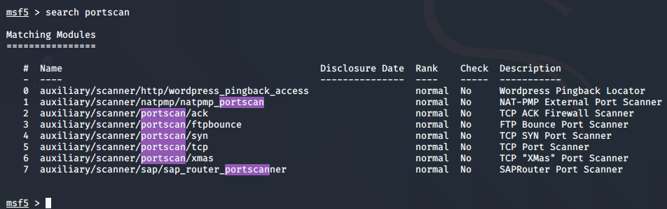

msfconsole type kiya
then typed this :

so we got many scans na syn,tcp,xmas
and syn scannner is just like the stealth scan
so type :

u might encounter machones where nmap isnt present already so then u could run this to get simialr results
to speed it up increse the threads